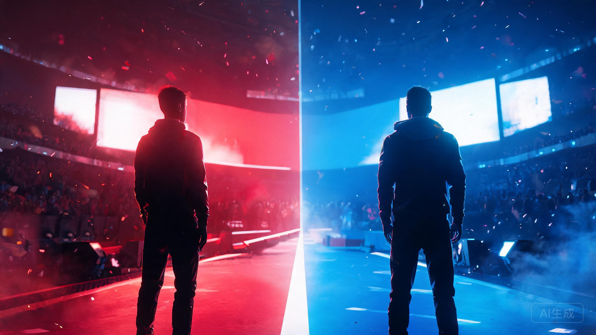
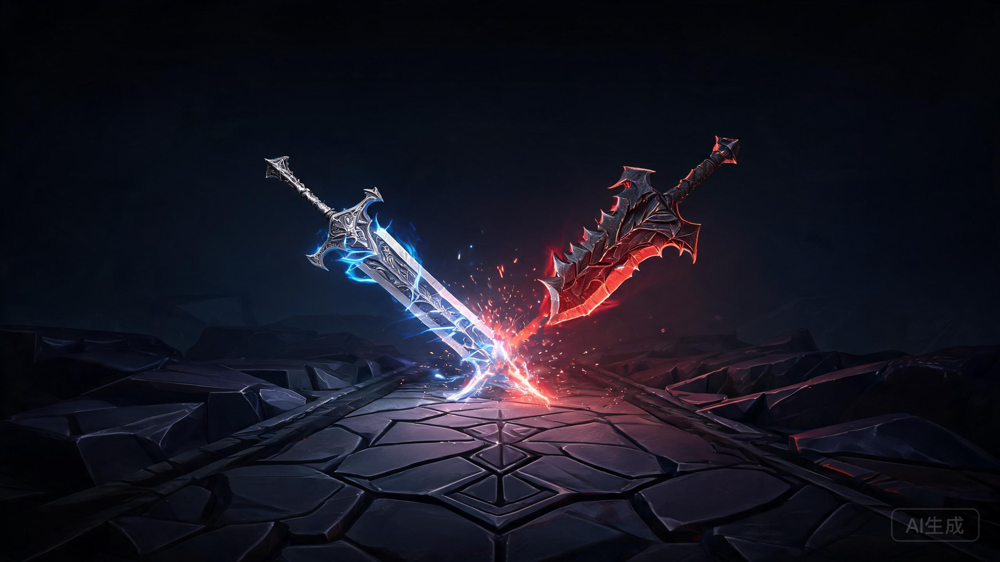

▲ AI 概念图，非现场照片
S16 全球总决赛 · 瑞士轮最后一夜
明早 7 点，Zeus 再撞 Bin
这次输了，直接 16 强回家
一场 BO3，两个上单，一条生死线
先给结论：这不是决赛，是生死战。
北京时间 11 月 1 日，周日早上，S16 瑞士轮最后三场 BO3 依次开打。HLE 对 BLG 压轴出场，赢的进八强，输的直接 16 强回家。
Zeus 对 Bin，就摆在这一场里。
时间：11 月 1 日（周日）凌晨 1:00 轮次开打，HLE 对 BLG 为第三场，预计早上 7:00 左右（以官方为准）
赛制：BO3，胜者以 3-2 进入八强，败者止步 16 强
背景：八强已定五席——GEN、DK、T1、iG、TES；2-2 组六队抢最后三张门票
首发：HLE Zeus / Kanavi / Zeka / Gumayusi / Delight
BLG Bin / Xun / Knight / Viper / ON
1
三个月前，Bin 从 Zeus 手里丢过一次冠军
7 月 12 日，MSI 决赛。HLE 3-2 赢下 BLG，Zeus 拿到 FMVP，也补齐了自己荣誉墙上最后一块拼图。
那轮系列赛，BLG 一度 2-1 领先，手里握着赛点。第四局 Zeus 掏出乌鸦，第五局锁下蒙多，硬生生把上路的天平掰了回去。
Bin 赛后说得很直接：两次输给 Zeus，都是 2-3。另一次，是 2024 年 S14 决赛，T1 3-2 BLG。
两次世界大赛的决赛，两次 2-3。
都只差一局。
| 时间 | 赛事 | 结果 | 赢家 |
|---|---|---|---|
| 2024.11 | S14 决赛 | T1 3-2 BLG | Zeus |
| 2024.5 | MSI 败者组决赛 | BLG 3-2 T1 | Bin |
| 2026.7.9 | MSI 胜者组决赛 | BLG 3-1 HLE | Bin |
| 2026.7.12 | MSI 决赛 | HLE 3-2 BLG | Zeus |
| 2026.11.1 | S16 瑞士轮 | BO3 生死战 | 待定 |
▲ 交手记录据公开赛事资料整理；表格只列 BO5 与即将开打的这场。
有个细节容易被忽略：在 MSI 的 BO5 里，Zeus 此前一直被 Bin 压着。直到今年 7 月那场决赛，他才第一次在 BO5 里赢下 Bin。
所以明早这场 BO3，不是"Zeus 顺手再赢一次"。是 Bin 最想还的一笔账。
2
一边是地狱签运，一边是好运用完
HLE 的瑞士轮，几乎是硬啃出来的。首轮赢 TES，接着连输 GEN、iG，第四轮 2-0 拿下 G2，才把自己拉回 2-2。
五轮对手：TES、GEN、iG、G2、BLG。四支 LPL/LCK 队伍，加一个 LEC 一号种子。据虎扑统计，这是标准的"地狱签运"。
BLG 的路也不平。首轮 0-1 输给 MKOI，爆出本届瑞士轮最大的冷门之一；之后赢下 KC，第四轮 1-2 不敌 TES，掉进 2-2。
还有一条数据，BLG 粉丝看了会沉默：据虎扑统计，S13 首轮赢过 KT 之后，BLG 在瑞士轮面对 LPL/LCK 队伍，再没赢过一场。
抽签也很戏剧。LOS 先和 LYON 抽到一起，规避原则之下，BLG 只剩 HLE 一个对手。瑞士轮前四轮一次 LCK 都没碰到的队伍，最后一轮被直接推到了 HLE 面前。
运气这东西，攒到最后，
可能一次全还回去。
3
上路这一栏，可能直接决定谁回家

▲ AI 概念图：两种上路解法，不是现场照片
MSI 决赛第五局，Bin 先手剑魔，Zeus 后手蒙多。剑魔前 20 分钟占优，蒙多越拖越无解。HLE 就靠这个"拖"字，把比赛拖进了自己的节奏。
Zeus 的原话是："从去年开始，我更在意怎么给整局游戏带来影响，而不只是打好对线。"
解说米勒当时发了条微博："史诗级的上路差距，Bin 何时才能理解上单不只是对线。"这话刺耳，但确实说中了那五局的走向。
Bin 这边不服。输给 TES 之后，他在采访里说，自己线上没问题，输在团队决策和中期团战。
两个人对"上单"的理解，正好是两个方向：一个想把上路打成突破口，一个想把上路变成整局游戏的支点。BO3 只有三局，谁先把自己的版本打出来，谁就占先手。
"如果明天取胜，那 HLE 应该能成为本届世界赛的主人公。"
—— Gumayusi，HLE 赛后采访
赔率也站在 HLE 这边：国内预测机构给出的指数是 HLE 1.59、BLG 2.31。但 BO3 的容错，比 BO5 更低——一局手感不对，就没有第四局给你调整。
4
明早看什么
一、Bin 的复仇。从 S14 决赛到 MSI 决赛，两次 2-3。这次不是决赛，却更直接——输了连八强都进不去。
二、Zeus 的上路影响力。对 G2 那场，他拿奎桑提打出全场最高伤害。上单在他手里，可以是坦克，也可以是第二个 carry。
三、赛区账本。BLG 出局，LPL 只剩 iG、TES；HLE 出局，LCK 只剩 GEN、DK、T1。三场打完，八强对阵抽签随之揭晓。
这也是为什么这场值得早起。它不只决定一张八强门票，还会改写整个淘汰赛的版图。
闹钟定在 6:50。
刷牙的时候，BP 就开始了。
评论区先押一手：
HLE 2-1，还是 BLG 2-1？敢不敢把比分打出来。
顺手转给那个说"明早叫我"的朋友。他大概率起不来。
点个关注。赛后我会把比分、关键团战和八强抽签结果，一起整理给你。
资料来源：英雄联盟赛事官方赛程、虎扑电竞、直播吧、腾讯新闻、Gamemeca。赛程时间与首发名单以官方最终公布为准；赔率仅为赛前参考，不构成任何建议。